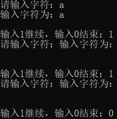

最近在使用cin.get()函数时遇到了一个迷惑行为，现已解开。
一、cin.get()的用法
char ch;
ch = cin.get(); //第1种用法
cin.get(ch); //第2种用法二、迷惑行为解密
当你前面调用过cin获取输入时，调用cin.get()函数不会等你等你在屏幕上手动再输入一个字符，而是直接读取 你上一次调用cin进行输入时的 最后一个回车字符。
下面来看一下两份不同的代码和运行结果，两份代码的区别仅仅在第13行。
1 void test() {
2 char ch;
3 int todo = 1;
4
5 cout << "请输入字符：";
6 cin.get(ch); //前面未调用过cin，会在屏幕等待你输入
7 cout << "输入字符为：" << ch << endl << endl;
8
9 cout << "输入1继续，输入0结束：";
10 cin >> todo;
11 while (todo) {
12 cout << "请输入字符：";
13 //cin.get();
14 cin.get(ch); //前面调用过cin，此时不会等待你在屏幕上输入，而是直接读取上一次调用cin最后输入的回车给ch
15 cout << "输入字符为：" << ch << endl << endl;
16
17 cout << "输入1继续，输入0结束：";
18 cin >> todo;
19 }
20 }正常情况下相邻两次循环输出结果的间隔仅为一个空行，但是从第2次循环开始间隔为两个空行，这是因为第14行代码读取了换行符并在下一行输出。
1 void test() {
2 char ch;
3 int todo = 1;
4
5 cout << "请输入字符：";
6 cin.get(ch); //前面未调用过cin，会在屏幕等待你输入
7 cout << "输入字符为：" << ch << endl << endl;
8
9 cout << "输入1继续，输入0结束：";
10 cin >> todo;
11 while (todo) {
12 cout << "请输入字符：";
13 cin.get(); //前面调用过cin，先用cin.get()吃掉上一次调用cin最后输入的回车
14 cin.get(ch); //此时可以正常输入字符给ch
15 cout << "输入字符为：" << ch << endl << endl;
16
17 cout << "输入1继续，输入0结束：";
18 cin >> todo;
19 }
20 }
相邻两次循环输出结果的间隔仅为一个空行。